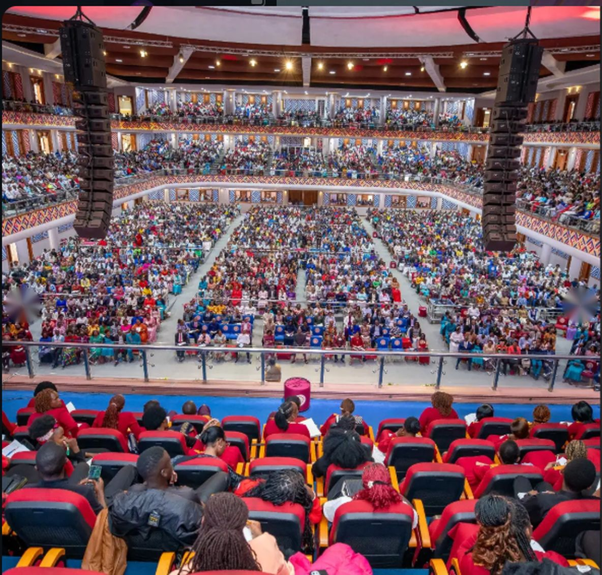

A church that loves God and people.
Kingdom Seekers Fellowship is a family of believers in Nakuru and across Kenya, seeking first the kingdom of God.



KSF History
Kingdom Seekers Fellowship, an Apostolic Church, is rooted in the timeless wisdom of Christ’s teaching found in Matthew 6:33:
“But seek ye first the kingdom of God and his righteousness, and all other things shall be added unto you.”
Kingdom Seekers Fellowship is headquartered in Nakuru Town, with a network of over 20 branches throughout the country. Our primary mission is to transform lives by seeking God and making Him known.
Our Journey
Kingdom Seekers Fellowship began when Apostle John Kimani William and his wife, Rev. Naomi Kimani, founded the ministry. It is headquartered in Nakuru Town, with just over 20 branches spreading across the nation.

Our Mission
At Kingdom Seekers Fellowship, our primary mission is to transform lives by seeking God and making Him known. We believe in the power of the Gospel to change hearts and impact communities.

Missions to the Body of Christ International (MBCI)
In 2008, under the leadership of Overseer Apostle John Kimani William, we launched Missions to the Body of Christ International (MBCI). The vision and mission of MBCI are clear: “Reaching out with the gospel of Jesus Christ, thus transforming lives, empowering believers, raising and equipping ministers, and ushering people, families, cities, and nations into their divine destiny.” MBCI has traveled to every major city and town in Kenya, conducting life-transforming Prayer and Breakthrough Conferences.
MBCI Mega Tent
In 2011, MBCI acquired a Mega tent and chairs, expanding it twice to accommodate the ever-growing crowd during missions. Today, by God’s grace, MBCI has two 40-foot trucks, 4 buses, several vans, and excellent public address systems that facilitate our missionary work. In 2023, during our 10-year anniversary celebrations, MBCI launched international missionary work, with the first meetings held in Burundi and Nigeria.
Come and worship with us
Pick a service, see what to expect, and we will have a seat ready for you.